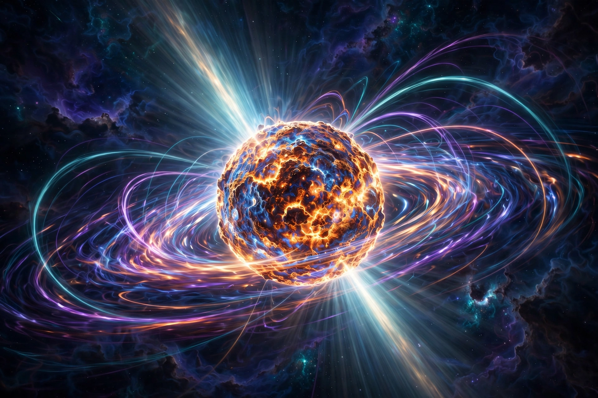

Pulsar

[Image: Artist's impression of a pulsar: a rotating neutron star beaming radiation from its magnetic poles]A pulsar (from pulsating radio source) is a highly magnetised, rotating neutron star that emits beams of electromagnetic radiation out of its magnetic poles. The beams sweep past Earth as the star rotates, producing pulses at intervals of milliseconds to seconds with the regularity of an atomic clock.
Pulsars were discovered in 1967 by Jocelyn Bell Burnell and Antony Hewish — the first, CP 1919 (PSR B1919+21), ticked every 1.337 seconds and was half-jokingly labelled LGM-1. Over 3,000 pulsars are now known. A single particle of a related type, they serve as laboratories for extreme gravity and matter: the Hulse–Taylor binary pulsar gave the first indirect evidence of gravitational waves, double pulsar systems test General relativity, and pulsar timing arrays reported evidence in 2023 for a background of nanohertz gravitational waves.
Formation and emission
When a massive star's core collapses in a supernova, conservation of angular momentum and magnetic flux leaves a neutron star of ~1.4 solar masses in a ~20 km sphere, spinning up to hundreds of times per second with fields up to 10¹⁵ gauss. Charged particles accelerated along the misaligned magnetic axis radiate in beams; the lighthouse effect produces the pulses. Pulsars slowly spin down as they radiate, though accretion can 'recycle' them to millisecond periods.
Uses
Millisecond pulsars are the most stable natural clocks known, rivalling atomic clocks over years; arrays of them (NANOGrav, EPTA, PPTA and others) act as a galactic gravitational-wave detector, and in 2023 the collaborations jointly announced evidence for a stochastic background consistent with orbiting supermassive black-hole binaries. Pulsars also probe the interstellar medium, test strong-field gravity, and feature in proposed spacecraft navigation (XNAV). The first exoplanets ever discovered (1992) orbit a pulsar, PSR B1257+12.